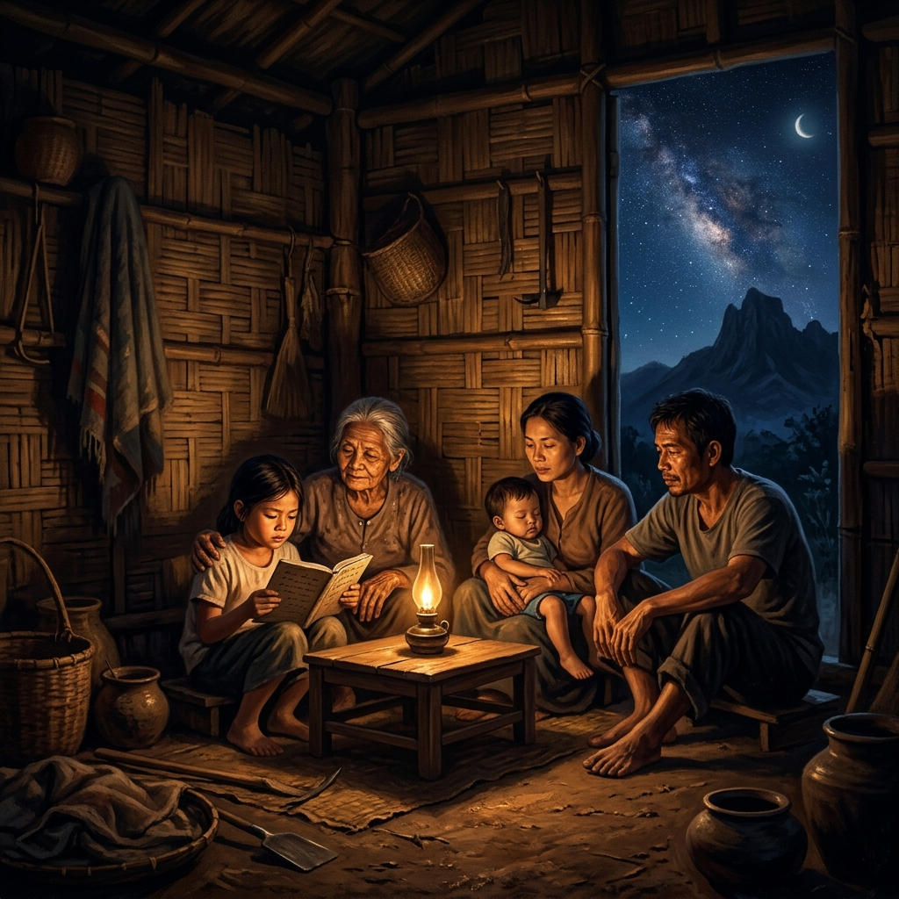
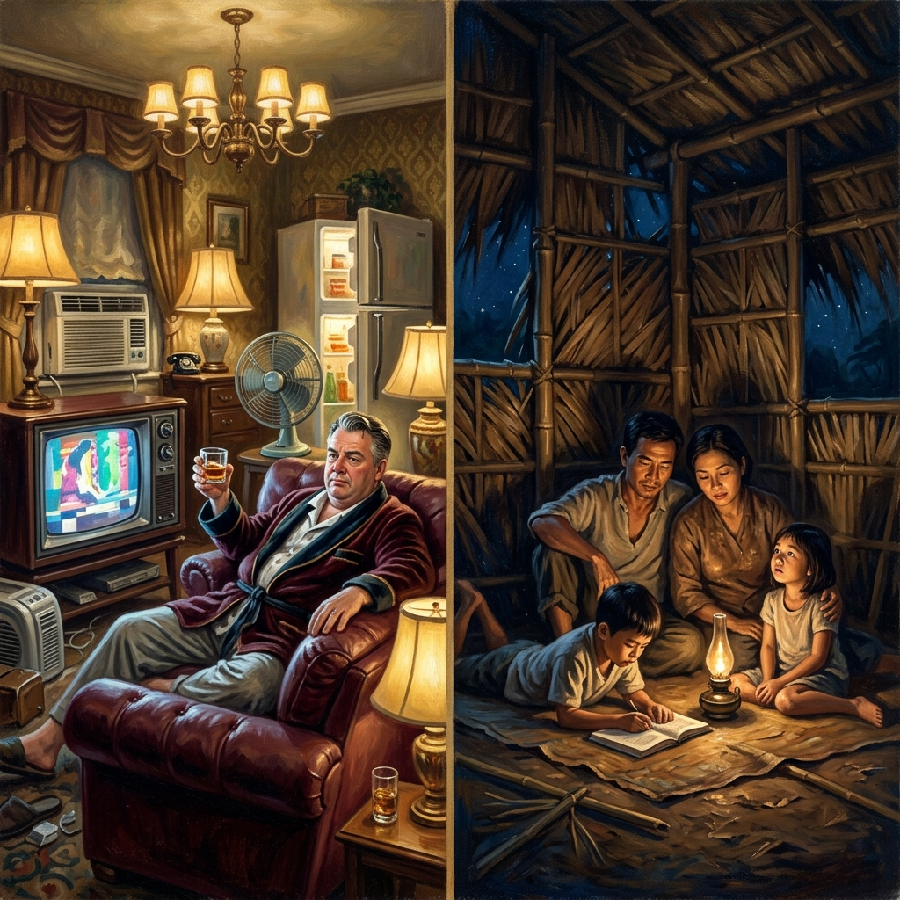
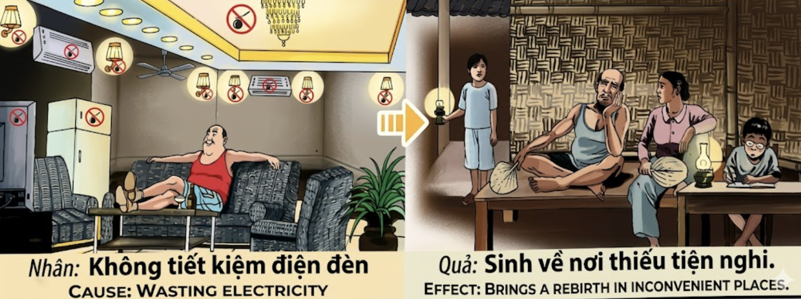

La Oscuridad que se HeredaThe Darkness that is InheritedL'Oscurità che si Eredita继承的黑暗الظلام الموروثТьма, которую наследуютDie Dunkelheit, die man erbtL'Obscurité que l'on Hérite受け継がれる闇A Escuridão que se HerdaBóng Tối Được Thừa Kế
Quien derrocha la luz eléctrica sin conciencia —encendiendo lo que no necesita, iluminando habitaciones vacías, consumiendo sin gratitud— está condenando a su alma futura a renacer donde la luz sea un lujo inalcanzable y la oscuridad, la única compañera. He who wastes electric light without conscience—turning on what he does not need, illuminating empty rooms, consuming without gratitude—is condemning his future soul to be reborn where light is an unreachable luxury and darkness the only companion. Chi spreca la luce elettrica senza coscienza — accendendo ciò che non serve, illuminando stanze vuote, consumando senza gratitudine — condanna la propria anima futura a rinascere dove la luce è un lusso irraggiungibile e il buio l'unica compagnia. 无意识地浪费电灯的人——打开不需要的灯，照亮空房间，毫无感恩地消耗——注定他未来的灵魂重生到光明是遥不可及的奢侈、而黑暗是唯一伙伴的地方。 من يبذّر النور الكهربائي بلا وعي — يشعل ما لا يحتاج، ويضيء غرفاً فارغة، ويستهلك بلا امتنان — فإنه يحكم على روحه المستقبلية بالولادة حيث يكون النور ترفاً بعيد المنال والظلام هو الرفيق الوحيد. Тот, кто расточает электрический свет без совести — включая то, что ему не нужно, освещая пустые комнаты, потребляя без благодарности — обрекает свою будущую душу на перерождение там, где свет — недосягаемая роскошь, а тьма — единственный спутник. Wer elektrisches Licht ohne Bewusstsein verschwendet — einschaltet, was er nicht braucht, leere Räume beleuchtet, ohne Dankbarkeit verbraucht — verurteilt seine zukünftige Seele zur Wiedergeburt dort, wo Licht ein unerreichbarer Luxus und Dunkelheit die einzige Begleiterin ist. Celui qui gaspille la lumière électrique sans conscience — allumant ce dont il n'a pas besoin, éclairant des pièces vides, consommant sans gratitude — condamne son âme future à renaître là où la lumière est un luxe inaccessible et l'obscurité la seule compagne. 意識なく電灯を浪費する者——必要のないものを点け、空の部屋を照らし、感謝なく消費する者——は、未来の魂を、光が手の届かぬ贅沢であり闇だけが唯一の道連れである場所に生まれ変わらせる運命を自ら署名しているのです。 Quem esbanja a luz elétrica sem consciência — acendendo o que não precisa, iluminando quartos vazios, consumindo sem gratidão — está a condenar a sua alma futura a renascer onde a luz é um luxo inalcançável e a escuridão a única companheira. Kẻ phung phí ánh sáng điện mà không hề hay biết — bật thứ không cần, soi sáng phòng trống, tiêu thụ mà không biết ơn — đang kết án linh hồn tương lai của mình phải tái sinh nơi ánh sáng là xa xỉ phẩm không thể với tới và bóng tối là người bạn duy nhất.
La electricidad es, en la era moderna, lo que el fuego fue para las cavernas y la antorcha para los templos: un regalo de la civilización que permite al ser humano prolongar el día, vencer la noche y vivir con dignidad incluso cuando el sol se oculta. Pero como todo regalo sagrado, exige reciprocidad. Quien enciende diez lámparas donde bastaría una, quien deja el aire acondicionado rugiendo en una habitación vacía, quien mantiene la televisión encendida como ruido de fondo mientras su espíritu duerme, está cometiendo un acto de desprecio hacia la energía misma —esa fuerza que la Tierra genera con esfuerzo volcánico, con la furia de sus ríos, con el aliento de sus vientos—. El karma lo observa todo: cada kilovatio despilfarrado queda registrado en el libro invisible del alma.
El mecanismo de retribución kármica por derrochar electricidad es de una simetría devastadora. El universo no castiga con iras divinas ni con venganzas celestiales; simplemente aplica la ley del espejo invertido: lo que dilapidaste en abundancia, lo experimentarás en carencia. Quien malgastó la luz sin pensar, renace en un lugar donde la luz no llega: una choza de bambú en las montañas, una aldea donde la noche se ilumina con una sola llama tenue de queroseno. Sus hijos estudiarán forzando los ojos ante una lámpara de aceite; su familia sudará en el calor sin ventilador; el frío penetrará sin calefacción. No es un castigo, es un reequilibrio. Como el péndulo que tras oscilar hacia la abundancia excesiva regresa inevitablemente al otro extremo, el alma vivirá la ausencia exacta de aquello que desperdició sin conciencia. Y dentro de esa oscuridad kármica, si el alma comprende —si recuerda, aunque sea vagamente, que la penuria presente es el eco de la opulencia derrochada—, entonces comienza la verdadera iluminación: no la de las bombillas, sino la del espíritu que aprende a valorar cada destello de energía que el mundo le ofrece.
Electricity is, in the modern era, what fire was to caves and the torch to temples: a gift of civilization that allows human beings to extend the day, conquer the night, and live with dignity even when the sun hides. But like every sacred gift, it demands reciprocity. He who lights ten lamps where one would suffice, who leaves the air conditioner roaring in an empty room, who keeps the television on as background noise while his spirit sleeps, is committing an act of contempt toward energy itself—that force the Earth generates with volcanic effort, with the fury of its rivers, with the breath of its winds. Karma observes everything: every kilowatt squandered is recorded in the invisible book of the soul.
The mechanism of karmic retribution for wasting electricity is devastatingly symmetrical. The universe does not punish with divine wrath or celestial vengeance; it simply applies the law of the inverted mirror: what you squandered in abundance, you will experience in scarcity. He who wasted light without thought is reborn in a place where light does not reach: a bamboo hut in the mountains, a village where the night is lit by a single faint kerosene flame. His children will strain their eyes studying by an oil lamp; his family will sweat in the heat without a fan; the cold will penetrate without heating. It is not a punishment—it is a rebalancing. Like the pendulum that, after swinging toward excessive abundance, inevitably returns to the other extreme, the soul will live the precise absence of what it wasted without conscience. And within that karmic darkness, if the soul understands—if it remembers, however vaguely, that present hardship is the echo of squandered opulence—then the true illumination begins: not one of light bulbs, but of a spirit that learns to value every spark of energy the world offers.
L'elettricità è, nell'era moderna, ciò che il fuoco fu per le caverne e la fiaccola per i templi: un dono della civiltà che permette all'essere umano di prolungare il giorno, vincere la notte e vivere con dignità anche quando il sole si nasconde. Ma come ogni dono sacro, esige reciprocità. Chi accende dieci lampade dove ne basterebbe una, chi lascia il condizionatore ruggire in una stanza vuota, chi tiene la televisione accesa come rumore di fondo mentre il suo spirito dorme, sta commettendo un atto di disprezzo verso l'energia stessa.
Il meccanismo di retribuzione karmica per lo spreco di elettricità è di una simmetria devastante. L'universo non punisce con ire divine: applica la legge dello specchio invertito. Chi sprecò la luce senza pensarci, rinasce dove la luce non arriva: una capanna di bambù nelle montagne, un villaggio dove la notte si illumina con una sola fiamma tenue di cherosene. Non è una punizione — è un riequilibrio. E dentro quella oscurità, se l'anima comprende che la penuria presente è l'eco dell'opulenza dilapidata, allora comincia la vera illuminazione: non quella delle lampadine, ma dello spirito.
电力在现代，就像火之于洞穴、火炬之于庙宇：它是文明的馈赠，让人类得以延长白昼、战胜黑夜、即使太阳隐没也能有尊严地生活。但像所有神圣的馈赠一样，它要求回报。点亮十盏灯而一盏足矣的人，在空房间里让空调轰鸣的人，让电视机作为背景噪音运转而灵魂沉睡的人——正在对能量本身犯下亵渎之罪。
因浪费电力而产生的业力报应机制具有毁灭性的对称。宇宙不以神怒或天罚来惩罚；它只是应用反向镜像法则：你在丰裕中挥霍的，将在匮乏中体验。无意识地浪费光明的人，重生在光明无法到达的地方：山中的竹棚、只靠一盏微弱煤油灯照亮夜晚的村庄。这不是惩罚，而是再平衡。如果灵魂理解——即使模糊地记起——当下的困苦是曾经挥霍的回声，那么真正的启明便开始了：不是灯泡的光，而是懂得珍惜世界给予每一束能量的灵魂之光。
الكهرباء في العصر الحديث هي ما كانت عليه النار للكهوف والمشعل للمعابد: هبة حضارية تتيح للإنسان إطالة النهار وقهر الليل والعيش بكرامة حتى حين تغيب الشمس. لكن كسائر الهبات المقدسة، تستوجب المعاملة بالمثل. من يضيء عشر مصابيح حيث يكفي واحد، ومن يترك المكيف يزأر في غرفة فارغة، ومن يبقي التلفاز شغّالاً ضجيجاً وروحه نائمة — يرتكب إهانة للطاقة ذاتها.
آلية الجزاء الكارمي لتبذير الكهرباء متماثلة بشكل مدمر. الكون لا يعاقب بغضب إلهي بل يطبق قانون المرآة المعكوسة: ما بدّدته في الوفرة ستختبره في الشح. من أضاع النور بلا تفكير يولد من جديد حيث لا يصل النور: كوخ من البامبو، قرية لا يضيء ليلها إلا لهب خافت من الكيروسين. ليس عقاباً بل إعادة توازن. وإن أدركت الروح — ولو بشكل غامض — أن العوز الحاضر هو صدى البذخ المُبدَّد، فعندها يبدأ التنوير الحقيقي: ليس تنوير المصابيح بل تنوير الروح.
Электричество в современную эпоху — это то, чем был огонь для пещер и факел для храмов: дар цивилизации, позволяющий человеку продлить день, победить ночь и жить достойно даже когда солнце скрывается. Но, как и всякий священный дар, оно требует взаимности. Тот, кто зажигает десять ламп, когда хватило бы одной, кто оставляет кондиционер рёвом заполнять пустую комнату, кто держит телевизор включённым фоновым шумом, пока его дух спит — совершает акт пренебрежения к самой энергии.
Механизм кармического воздаяния за расточительство электричества разрушительно симметричен. Вселенная не карает божественным гневом: она лишь применяет закон обратного зеркала. Расточавший свет без мысли рождается там, куда свет не добирается: бамбуковая хижина в горах, деревня, где ночь освещает единственный тусклый огонёк керосинки. Это не наказание — это восстановление баланса. И если душа осознает, что нынешняя скудость — эхо растраченного, тогда начинается подлинное просветление: не лампочек, а духа.
Elektrizität ist in der modernen Ära das, was das Feuer für die Höhlen und die Fackel für die Tempel war: ein Geschenk der Zivilisation, das dem Menschen erlaubt, den Tag zu verlängern, die Nacht zu besiegen und selbst in der Dunkelheit würdevoll zu leben. Doch wie jedes heilige Geschenk verlangt es Gegenseitigkeit. Wer zehn Lampen anzündet, wo eine genügt, wer die Klimaanlage in einem leeren Raum dröhnen lässt, wer den Fernseher als Hintergrundgeräusch laufen lässt, während sein Geist schläft — begeht einen Akt der Verachtung gegenüber der Energie selbst.
Der Mechanismus karmischer Vergeltung für Stromverschwendung ist von verheerender Symmetrie. Das Universum straft nicht mit göttlichem Zorn: Es wendet das Gesetz des umgekehrten Spiegels an. Wer Licht gedankenlos verschwendete, wird dort wiedergeboren, wo Licht nicht hinreicht: eine Bambushütte in den Bergen, ein Dorf, dessen Nacht nur eine schwache Kerosinlampe erhellt. Es ist keine Strafe — es ist ein Ausgleich. Und erkennt die Seele, dass die heutige Entbehrung das Echo des Verschwendeten ist, so beginnt die wahre Erleuchtung: nicht die der Glühbirnen, sondern die des Geistes.
L'électricité est, à l'ère moderne, ce que le feu était aux cavernes et la torche aux temples : un don de la civilisation qui permet à l'être humain de prolonger le jour, de vaincre la nuit et de vivre dignement même quand le soleil se cache. Mais comme tout don sacré, elle exige la réciprocité. Celui qui allume dix lampes là où une suffirait, qui laisse le climatiseur rugir dans une pièce vide, qui garde la télévision allumée en bruit de fond tandis que son esprit dort — commet un acte de mépris envers l'énergie elle-même.
Le mécanisme de rétribution karmique pour le gaspillage d'électricité est d'une symétrie dévastatrice. L'univers ne punit pas par des colères divines : il applique la loi du miroir inversé. Celui qui gaspilla la lumière sans y penser renaît là où la lumière n'arrive pas : une cabane de bambou dans les montagnes, un village où la nuit ne s'éclaire que d'une seule flamme vacillante de kérosène. Ce n'est pas un châtiment — c'est un rééquilibrage. Et si l'âme comprend que la pénurie présente est l'écho de l'opulence dilapidée, alors commence la véritable illumination : non pas celle des ampoules, mais celle de l'esprit.
電気は現代において、火が洞窟にとって、松明が神殿にとってそうであったものです。人類が昼を延長し、夜を征服し、太陽が隠れても尊厳を持って生きることを可能にする文明の贈り物です。しかし、あらゆる神聖な贈り物と同じように、それは互恵を求めます。一つで十分な場所で十の電灯を灯す者、空の部屋でエアコンを唸らせる者、精神が眠っている間にテレビを背景音として流し続ける者——それはエネルギーそのものへの侮辱行為です。
電力浪費に対するカルマの報いの仕組みは、壊滅的な対称性を持っています。宇宙は神の怒りで罰するのではなく、ただ反転鏡の法則を適用します。考えなしに光を浪費した者は、光の届かない場所に生まれ変わります。山中の竹小屋、夜を照らすのはただ一つのかすかな灯油の炎だけの村。それは罰ではなく、再均衡です。もし魂が、現在の欠乏が浪費された豊かさのこだまであると理解するなら、真の啓発が始まります——電球の光ではなく、精神の光が。
A eletricidade é, na era moderna, o que o fogo foi para as cavernas e a tocha para os templos: um presente da civilização que permite ao ser humano prolongar o dia, vencer a noite e viver com dignidade mesmo quando o sol se esconde. Mas como todo presente sagrado, exige reciprocidade. Quem acende dez lâmpadas onde bastaria uma, quem deixa o ar condicionado a rugir numa sala vazia, quem mantém a televisão ligada como ruído de fundo enquanto o espírito dorme — está a cometer um acto de desprezo pela energia em si.
O mecanismo de retribuição kármica pelo desperdício de eletricidade é de uma simetria devastadora. O universo não castiga com fúrias divinas: aplica a lei do espelho invertido. Quem esbanjou a luz sem pensar, renasce onde a luz não chega: uma cabana de bambu nas montanhas, uma aldeia onde a noite se alumia com uma única chama ténue de querosene. Não é castigo — é reequilíbrio. E se a alma compreender que a penúria presente é o eco da opulência dissipada, então começa a verdadeira iluminação: não a das lâmpadas, mas a do espírito.
Điện năng, trong thời hiện đại, chính là những gì ngọn lửa từng là đối với hang động và ngọn đuốc với đền thờ: một món quà của văn minh cho phép con người kéo dài ban ngày, chinh phục bóng đêm và sống với phẩm giá ngay cả khi mặt trời khuất bóng. Nhưng như mọi món quà linh thiêng, nó đòi hỏi sự đáp đền. Kẻ thắp mười ngọn đèn nơi chỉ cần một, kẻ để máy lạnh gầm rú trong phòng trống, kẻ bật ti-vi làm tiếng ồn nền trong khi tâm hồn ngủ say — đang phạm tội khinh thường bản thân năng lượng.
Cơ chế báo ứng nhân quả cho sự phung phí điện năng có tính đối xứng tàn khốc. Vũ trụ không trừng phạt bằng cơn thịnh nộ thiêng liêng: nó áp dụng luật gương ngược. Kẻ phí phạm ánh sáng mà không suy nghĩ sẽ tái sinh nơi ánh sáng không chạm tới: một mái lều tre trên đỉnh núi, một ngôi làng nơi màn đêm chỉ được thắp sáng bằng một ngọn đèn dầu leo lét. Đó không phải hình phạt — mà là sự tái cân bằng. Và nếu linh hồn thấu hiểu rằng sự thiếu thốn hiện tại là tiếng vọng của sự xa xỉ đã phung phí, thì lúc ấy sự giác ngộ đích thực mới bắt đầu: không phải ánh sáng của bóng đèn, mà là ánh sáng của tâm hồn.
La Última Lámpara
The Last Lamp
L'Ultima Lampada
最后一盏灯
المصباح الأخير
Последняя лампа
Die letzte Lampe
La Dernière Lampe
最後のランプ
A Última Lâmpada
Ngọn Đèn Cuối Cùng
Había una vez un hombre rico llamado Tuấn que vivía en una mansión de paredes de mármol. Su casa tenía cuarenta y siete lámparas, y las cuarenta y siete estaban siempre encendidas — incluso de día, incluso cuando dormía, incluso cuando viajaba a otras ciudades durante semanas. El aire acondicionado rugía en seis habitaciones vacías. El televisor iluminaba un salón donde nadie miraba. La nevera se abría y se cerraba veinte veces, pero solo para sacar hielo para el whisky. "La electricidad es barata", repetía Tuấn con una sonrisa que mostraba demasiados dientes. Su vecina, una maestra de escuela llamada Mai, le pidió un día que apagara al menos las luces del jardín, pues la contaminación lumínica no dejaba dormir a sus alumnos. Tuấn rio: "Que se compren cortinas."
Aquella misma noche, Mai regresó a su humilde aula con paredes de madera y una sola bombilla que parpadeaba como el latido de un corazón enfermo. Reunió a sus alumnos y les dijo: "Hijos, hay gente en el mundo que enciende cuarenta y siete soles artificiales para no ver a nadie, y hay gente como nosotros que con un solo parpadeo de luz aprende a ver el universo entero. Recordad siempre: la verdadera luz no se enchufa a la pared. La verdadera luz crece dentro de quien sabe agradecer lo poco que tiene."
Tuấn murió una noche de verano con todas las luces encendidas. Nadie las apagó hasta que lo encontraron tres días después. Cuando su alma abrió los ojos en la siguiente vida, no había interruptor. No había enchufe. No había cable. Solo una choza de hojas de palmera trenzadas, un suelo de tierra, y una niña que se acercaba con una lámpara de aceite tan pequeña que apenas podía alumbrar su propia mano. Era la última lámpara del hogar y su mecha estaba a punto de apagarse. La niña — su hija en aquella vida nueva — le dijo con una voz suave como la brisa entre las cañas: "Padre, no tenemos más aceite. Pero no te preocupes: la maestra del pueblo nos enseñó que quien aprende a ver en la oscuridad, nunca vuelve a estar ciego." Tuấn sintió que los ojos se le llenaban de algo más cálido que cualquier bombilla — de lágrimas — y comprendió al fin que las cuarenta y siete lámparas de su vida anterior no habían iluminado nada, porque su alma había estado a oscuras todo el tiempo.
There was once a rich man named Tuấn who lived in a marble-walled mansion. His house had forty-seven lamps, and all forty-seven were always on—even during the day, even when he slept, even when he traveled to other cities for weeks. The air conditioner roared in six empty rooms. The television lit a lounge where no one watched. The refrigerator opened and closed twenty times, but only to take out ice for whisky. "Electricity is cheap," Tuấn would repeat with a smile that showed too many teeth. His neighbor, a schoolteacher named Mai, asked him one day to at least turn off the garden lights, for the light pollution kept her students from sleeping. Tuấn laughed: "Let them buy curtains."
That very night, Mai returned to her humble classroom with wooden walls and a single bulb that flickered like the heartbeat of a sick heart. She gathered her students and said: "Children, there are people in the world who light forty-seven artificial suns so as not to see anyone, and there are people like us who with a single flicker of light learn to see the entire universe. Always remember: true light does not plug into the wall. True light grows within the one who knows how to be grateful for the little they have."
Tuấn died one summer night with every light on. No one turned them off until they found him three days later. When his soul opened its eyes in the next life, there was no switch. No plug. No wire. Only a hut of braided palm leaves, a dirt floor, and a girl approaching with an oil lamp so small it could barely illuminate her own hand. It was the last lamp in the household, and its wick was about to go out. The girl—his daughter in that new life—said to him in a voice as soft as the breeze through the reeds: "Father, we have no more oil. But don't worry: the village teacher told us that whoever learns to see in the darkness will never be blind again." Tuấn felt his eyes fill with something warmer than any light bulb—with tears—and finally understood that the forty-seven lamps of his previous life had illuminated nothing, because his soul had been in the dark the entire time.
C'era una volta un uomo ricco di nome Tuấn che viveva in una villa dalle pareti di marmo. La sua casa aveva quarantasette lampade, e tutte e quarantasette erano sempre accese — anche di giorno, anche quando dormiva, anche quando viaggiava per settimane. Il condizionatore ruggiva in sei stanze vuote. Il televisore illuminava un salone dove nessuno guardava. La sua vicina, una maestra di nome Mai, gli chiese un giorno di spegnere almeno le luci del giardino. Tuấn rise: "Che si comprino delle tende."
Quella stessa sera, Mai tornò nella sua umile aula con pareti di legno e un'unica lampadina che tremolava come il battito di un cuore malato. Riunì i suoi studenti e disse: "Figli, c'è gente nel mondo che accende quarantasette soli artificiali per non vedere nessuno, e c'è gente come noi che con un solo battito di luce impara a vedere l'intero universo. Ricordate sempre: la vera luce non si attacca alla parete. La vera luce cresce dentro chi sa essere grato per il poco che ha."
Tuấn morì una notte d'estate con tutte le luci accese. Quando la sua anima aprì gli occhi nella vita successiva, non c'era interruttore. Nessuna presa. Nessun filo. Solo una capanna di foglie di palma intrecciate, un pavimento di terra, e una bambina che si avvicinava con una lampada a olio così piccola da illuminare a malapena la propria mano. Era l'ultima lampada della casa. La bambina — sua figlia in quella vita nuova — gli disse con voce dolce: "Papà, non abbiamo più olio. Ma non preoccuparti: la maestra ci ha insegnato che chi impara a vedere nel buio non sarà mai più cieco." Tuấn sentì gli occhi riempirsi di qualcosa più caldo di qualunque lampadina — di lacrime — e comprese finalmente che le quarantasette lampade della sua vita precedente non avevano illuminato nulla, perché la sua anima era stata al buio tutto il tempo.
从前有一个名叫全的富人，住在一座大理石墙壁的豪宅里。他的房子有四十七盏灯，而且四十七盏全都永远亮着——白天也亮，他睡觉也亮着，他出差好几周也亮着。六间空房的空调日夜轰鸣。电视照亮了一间无人观看的客厅。他的邻居，一位叫阿梅的教师，有天请求他至少关掉花园里的灯，因为光污染让她的学生们无法入睡。全笑道："让他们买窗帘去。"
当晚，阿梅回到她那简陋的木板教室，只有一盏灯泡在像病弱的心跳一样闪烁。她把学生们聚在一起说："孩子们，世上有人点亮四十七个人造太阳却看不见任何人，而像我们这样的人，只凭一丝微光就能学会看见整个宇宙。永远记住：真正的光不是插在墙上的。真正的光长在懂得感恩所拥有的一点点的人心中。"
全在一个夏夜所有灯都亮着的时候死去了。当他的灵魂在下一世睁开眼睛时，没有开关，没有插座，没有电线。只有一间棕榈叶编织的茅屋、泥土地面，和一个女孩端着一盏小得只能照亮自己手的油灯走来。那是家里最后一盏灯，灯芯即将熄灭。女孩——他在那个新生命中的女儿——用如芦苇间微风般柔和的声音说道："爸爸，我们没有油了。但别担心：村里的老师教我们，学会在黑暗中看见的人，永远不会再失明。"全感到双眼充盈着比任何灯泡都温暖的东西——泪水——他终于明白，前世的四十七盏灯什么都没有照亮，因为他的灵魂一直在黑暗之中。
كان ثمة رجل ثري يدعى توان يعيش في قصر بجدران رخامية. كان في بيته سبعة وأربعون مصباحاً، وكلها مضاءة دائماً — نهاراً وليلاً، حين ينام وحين يسافر لأسابيع. المكيفات تزمجر في ست غرف فارغة. التلفاز يضيء صالوناً لا يشاهده أحد. طلبت منه جارته، معلمة تدعى ماي، أن يطفئ على الأقل أنوار الحديقة. ضحك: "فليشتروا ستائر."
في تلك الليلة ذاتها، عادت ماي إلى فصلها المتواضع بجدران خشبية ومصباح واحد يرتعش كنبض قلب مريض. جمعت تلاميذها وقالت: "يا أبنائي، ثمة أناس في العالم يوقدون سبعة وأربعين شمساً اصطناعية كي لا يروا أحداً. وثمة أناس مثلنا، بومضة نور واحدة يتعلمون رؤية الكون بأسره. تذكّروا دائماً: النور الحقيقي لا يُوصَّل بالحائط. النور الحقيقي ينمو في قلب من يعرف كيف يكون شاكراً للقليل الذي عنده."
مات توان في ليلة صيفية وكل الأنوار مشتعلة. حين فتحت روحه عينيها في الحياة التالية، لم يكن ثمة مفتاح، لا قابس، لا سلك. فقط كوخ من سعف النخيل المجدول، أرضية من تراب، وطفلة تقترب بمصباح زيت صغير بالكاد يضيء يدها. كان المصباح الأخير في البيت، وفتيلته توشك أن تنطفئ. الطفلة — ابنته في تلك الحياة — قالت بصوت ناعم كنسيم بين القصب: "أبي، ما عندنا زيت. لكن لا تقلق: المعلمة علمتنا أن من يتعلم الرؤية في الظلام لن يكون أعمى أبداً." شعر توان بعينيه تمتلئان بشيء أدفأ من أي مصباح — بدموع — وفهم أخيراً أن سبعة وأربعين مصباحاً في حياته السابقة لم تُنِر شيئاً، لأن روحه كانت في الظلام طوال الوقت.
Жил-был богатый человек по имени Туан в особняке с мраморными стенами. В его доме было сорок семь ламп, и все сорок семь горели всегда — даже днём, даже когда он спал. Кондиционеры рычали в шести пустых комнатах. Телевизор освещал гостиную, в которой никто не смотрел. Соседка, учительница по имени Май, попросила его хотя бы выключить садовые фонари. Туан рассмеялся: «Пусть купят шторы».
В тот же вечер Май вернулась в свой скромный класс с деревянными стенами и единственной лампочкой, мерцавшей, как биение больного сердца. Она собрала учеников и сказала: «Дети, есть люди, которые зажигают сорок семь искусственных солнц, чтобы никого не видеть. А есть такие, как мы, кто одним мерцанием света учится видеть целую вселенную. Помните всегда: настоящий свет не включается в розетку. Настоящий свет растёт в том, кто умеет быть благодарным за малое».
Туан умер летней ночью со всеми включёнными лампами. Когда его душа открыла глаза в следующей жизни, не было ни выключателя, ни розетки, ни провода. Только хижина из плетёных пальмовых листьев, земляной пол и девочка с масляной лампой, столь малой, что та едва освещала её собственную руку. Это была последняя лампа в доме, и её фитиль вот-вот погаснет. Девочка — его дочь в той новой жизни — сказала голосом, мягким как ветерок среди тростника: «Папа, масла больше нет. Но не переживай: деревенская учительница говорила, что тот, кто научится видеть во тьме, никогда больше не будет слепым». Туан почувствовал, как глаза его наполнились чем-то теплее любой лампочки — слезами — и наконец понял, что сорок семь ламп его прошлой жизни не осветили ничего, потому что его душа всё это время была во тьме.
Es war einmal ein reicher Mann namens Tuấn, der in einer Villa mit Marmorwänden lebte. Sein Haus hatte siebenundvierzig Lampen, und alle siebenundvierzig brannten immer — selbst am Tag, selbst wenn er schlief. Die Klimaanlage dröhnte in sechs leeren Zimmern. Der Fernseher beleuchtete ein Wohnzimmer, in dem niemand hinschaute. Seine Nachbarin, eine Lehrerin namens Mai, bat ihn eines Tages, wenigstens die Gartenbeleuchtung auszuschalten. Tuấn lachte: „Sollen sie sich Vorhänge kaufen."
An jenem Abend kehrte Mai in ihr bescheidenes Klassenzimmer zurück, mit Holzwänden und einer einzigen Glühbirne, die wie der Herzschlag eines kranken Herzens flackerte. Sie versammelte ihre Schüler: „Kinder, es gibt Menschen, die siebenundvierzig künstliche Sonnen anzünden, um niemanden zu sehen. Und es gibt Menschen wie uns, die mit einem einzigen Flackern lernen, das ganze Universum zu sehen. Vergesst nie: Wahres Licht steckt man nicht in die Steckdose. Wahres Licht wächst in dem, der für das Wenige dankbar ist."
Tuấn starb in einer Sommernacht mit allen Lichtern an. Als seine Seele die Augen im nächsten Leben öffnete, gab es keinen Schalter. Keine Steckdose. Kein Kabel. Nur eine Hütte aus geflochtenen Palmblättern, ein Erdboden und ein Mädchen mit einer Öllampe, die so klein war, dass sie kaum ihre eigene Hand erhellte. Es war die letzte Lampe im Haus. Das Mädchen — seine Tochter in jenem neuen Leben — sagte mit einer Stimme, sanft wie der Wind im Schilf: „Vater, wir haben kein Öl mehr. Aber mach dir keine Sorgen: Die Dorflehrerin sagte uns, wer im Dunkeln zu sehen lernt, wird nie wieder blind sein." Tuấn spürte, wie seine Augen sich mit etwas füllten, das wärmer war als jede Glühbirne — mit Tränen — und verstand endlich, dass die siebenundvierzig Lampen seines vorigen Lebens nichts erleuchtet hatten, denn seine Seele war die ganze Zeit im Dunkeln gewesen.
Il était une fois un homme riche nommé Tuấn qui vivait dans un manoir aux murs de marbre. Sa maison comptait quarante-sept lampes, et les quarante-sept étaient toujours allumées — même le jour, même quand il dormait, même quand il voyageait des semaines. La climatisation rugissait dans six pièces vides. Le téléviseur éclairait un salon que personne ne regardait. Sa voisine, une institutrice nommée Mai, lui demanda un jour d'éteindre au moins les lumières du jardin. Tuấn rit : « Qu'ils s'achètent des rideaux. »
Ce soir-là, Mai retourna dans son humble salle de classe aux murs de bois et à l'unique ampoule qui clignotait comme le battement d'un cœur malade. Elle rassembla ses élèves : « Mes enfants, il y a des gens dans le monde qui allument quarante-sept soleils artificiels pour ne voir personne. Et il y a des gens comme nous qui, avec un seul clignotement de lumière, apprennent à voir l'univers tout entier. Souvenez-vous toujours : la vraie lumière ne se branche pas au mur. La vraie lumière grandit en celui qui sait être reconnaissant du peu qu'il a. »
Tuấn mourut une nuit d'été avec toutes les lumières allumées. Quand son âme ouvrit les yeux dans la vie suivante, il n'y avait ni interrupteur, ni prise, ni fil. Juste une cabane de feuilles de palmier tressées, un sol de terre battue, et une petite fille qui s'approchait avec une lampe à huile si petite qu'elle éclairait à peine sa propre main. C'était la dernière lampe du foyer, et sa mèche allait s'éteindre. La fillette — sa fille dans cette vie nouvelle — lui dit d'une voix douce comme la brise entre les roseaux : « Papa, nous n'avons plus d'huile. Mais ne t'inquiète pas : la maîtresse du village nous a appris que celui qui apprend à voir dans l'obscurité ne sera plus jamais aveugle. » Tuấn sentit ses yeux se remplir de quelque chose de plus chaud que n'importe quelle ampoule — de larmes — et comprit enfin que les quarante-sept lampes de sa vie précédente n'avaient rien éclairé, car son âme était restée dans le noir tout ce temps.
昔、大理石の壁に囲まれた邸宅に住む裕福な男がいました。名前はトゥアン。彼の家には四十七のランプがあり、四十七すべてが常につけっぱなしでした——昼も夜も、眠っている時も、何週間も旅に出ている時も。六つの空き部屋でエアコンが唸りを上げていました。隣に住むマイという女教師が、せめて庭の照明を消してほしいと頼みました。トゥアンは笑いました。「カーテンでも買えばいい。」
その夜、マイは木の壁と、病んだ心臓の鼓動のように瞬く一つだけの電球しかない質素な教室に帰りました。生徒たちを集めてこう言いました。「子供たちよ、世の中には四十七の人工の太陽を灯しても誰も見ようとしない人がいます。そして私たちのように、たった一つの光のまたたきで宇宙の全てを見ることを学ぶ人がいます。いつも覚えておいて。本当の光はコンセントには差し込めません。本当の光は、持っているわずかなものに感謝を知る者の中に育つのです。」
トゥアンはある夏の夜、すべての照明がついたまま亡くなりました。来世で魂が目を開けたとき、スイッチはありませんでした。コンセントもなければ、電線もない。あるのは編んだヤシの葉でできた小屋と土の床、そして自分の手さえ照らせないほど小さな油のランプを持って近づいてくる少女だけでした。それは家に残された最後のランプで、芯はまさに消えようとしていました。少女——その新しい生での娘——は葦の間を吹く風のように優しい声で言いました。「お父さん、もう油がないの。でも心配しないで。村の先生が教えてくれたの、暗闇の中で見ることを学んだ人は、二度と盲目にはならないって。」トゥアンは、どんな電球よりも温かいもので目が満たされるのを感じました——涙で——そしてようやく理解しました。前世の四十七のランプは何も照らしていなかったのだと。なぜなら彼の魂は、ずっと暗闇の中にいたのだから。
Era uma vez um homem rico chamado Tuấn que vivia numa mansão de paredes de mármore. A sua casa tinha quarenta e sete lâmpadas, e todas as quarenta e sete estavam sempre acesas — mesmo de dia, mesmo quando dormia, mesmo quando viajava durante semanas. O ar condicionado rugia em seis quartos vazios. A sua vizinha, uma professora chamada Mai, pediu-lhe um dia que apagasse pelo menos as luzes do jardim. Tuấn riu-se: «Que comprem cortinas.»
Nessa mesma noite, Mai regressou à sua humilde sala de aulas com paredes de madeira e uma única lâmpada que piscava como o batimento de um coração doente. Reuniu os alunos e disse: «Filhos, há gente no mundo que acende quarenta e sete sóis artificiais para não ver ninguém. E há gente como nós que com um único piscar de luz aprende a ver o universo inteiro. Lembrem-se sempre: a verdadeira luz não se liga à parede. A verdadeira luz cresce dentro de quem sabe ser grato pelo pouco que tem.»
Tuấn morreu numa noite de verão com todas as luzes acesas. Quando a sua alma abriu os olhos na vida seguinte, não havia interruptor. Nem tomada. Nem fio. Só uma cabana de folhas de palmeira, chão de terra, e uma menina que se aproximava com uma lamparina de azeite tão pequena que mal alumiava a própria mão. Era a última lâmpada do lar e o seu pavio estava a ponto de se apagar. A menina — sua filha naquela vida nova — disse-lhe com voz suave como a brisa entre os juncos: «Pai, já não temos azeite. Mas não te preocupes: a professora da aldeia ensinou-nos que quem aprende a ver na escuridão nunca mais fica cego.» Tuấn sentiu os olhos encherem-se de algo mais quente do que qualquer lâmpada — de lágrimas — e compreendeu finalmente que as quarenta e sete lâmpadas da vida anterior não tinham iluminado nada, porque a sua alma estivera às escuras todo o tempo.
Ngày xưa, có một người đàn ông giàu có tên Tuấn sống trong ngôi biệt thự tường đá hoa cương. Nhà ông có bốn mươi bảy ngọn đèn, và cả bốn mươi bảy ngọn lúc nào cũng sáng — ban ngày cũng bật, lúc ngủ cũng bật, đi xa hàng tuần cũng bật. Điều hòa gầm rú trong sáu phòng trống rỗng. Ti-vi chiếu sáng phòng khách không ai xem. Cô hàng xóm, một cô giáo tên Mai, một hôm xin anh tắt ít nhất đèn sân vườn đi vì ánh sáng quá chói làm học trò cô mất ngủ. Tuấn cười phá lên: "Mua rèm đi!"
Đêm ấy, cô Mai trở về lớp học giản dị với vách gỗ và một bóng đèn duy nhất nhấp nháy như nhịp đập của trái tim ốm yếu. Cô tập hợp học trò và nói: "Các con, trên đời có những người thắp bốn mươi bảy mặt trời giả mà chẳng nhìn thấy ai. Và có những người như chúng ta, chỉ bằng một tia sáng duy nhất, học được cách nhìn thấy cả vũ trụ. Hãy luôn nhớ: ánh sáng thực sự không cắm vào ổ điện. Ánh sáng thực sự lớn lên trong tâm hồn biết biết ơn cái ít ỏi mình có."
Tuấn chết vào một đêm hè với tất cả đèn sáng trưng. Khi linh hồn mở mắt ở kiếp sau, không có công tắc. Không ổ cắm. Không dây điện. Chỉ có một mái lều lá dừa đan, nền đất, và một bé gái ôm đèn dầu nhỏ xíu đến nỗi chẳng soi nổi bàn tay mình. Đó là ngọn đèn cuối cùng trong nhà, và bấc sắp lụi tàn. Cô bé — con gái ông trong kiếp mới — nói bằng giọng dịu dàng như gió luồn qua lau sậy: "Ba ơi, hết dầu rồi. Nhưng ba đừng lo: cô giáo trong làng dạy tụi con rằng ai học được cách nhìn thấy trong bóng tối, sẽ chẳng bao giờ mù nữa." Tuấn cảm thấy mắt mình đầy ắp thứ gì đó ấm hơn bất kỳ bóng đèn nào — nước mắt — và cuối cùng hiểu ra rằng bốn mươi bảy ngọn đèn kiếp trước chẳng soi sáng được gì, vì linh hồn ông vốn dĩ đã chìm trong bóng tối suốt cả kiếp.

La Inspiración Original
The Original Inspiration
Nguồn cảm hứng ban đầu
La historia que hemos relatado en este capítulo está inspirada por el pasaje de la escena original de los murales «Tranh Nhân Quả» (Ilustraciones del Karma) del Templo Linh Ung en Da Nang, capturado en la imagen.
The story we have told in this chapter is inspired by the passage from the original scene of the "Tranh Nhân Quả" (Illustrations of Karma) murals of the Linh Ung Temple in Da Nang, captured in the image.
Câu chuyện chúng tôi kể trong chương này được lấy cảm hứng từ đoạn trích từ cảnh gốc của bức tranh tường "Tranh Nhân Quả" ở chùa Linh Ứng ở Đà Nẵng, được ghi lại trong hình ảnh.

Como se puede apreciar en el pasaje extraído del mural, la causa y su efecto kármico están descritos originalmente en vietnamita y con una breve traducción al inglés. A continuación, su traducción en los distintos idiomas:
As can be seen in the passage taken from the mural, the cause and its karmic effect are originally described in Vietnamese and with a brief translation into English. Below, its translation in the different languages:
🇻🇳 Tiếng Việt:
Nhân: Không tiết kiệm điện đèn.
Quả: Sinh về nơi thiếu tiện nghi.
🇬🇧 English:
Cause: Wasting electricity.
Effect: Brings a rebirth in inconvenient places.
Traducción Recreada:
Causa: Malgastar la electricidad sin conciencia ni respeto.
Efecto: Renacer en un lugar carente de comodidades modernas, donde la luz eléctrica es un lujo inalcanzable.
Recreated Translation:
Cause: Wasting electricity without conscience or respect.
Effect: Rebirth in a place lacking modern comforts, where electric light is an unreachable luxury.
Traduzione ricreata:
Causa: Sprecare l'elettricità senza coscienza né rispetto.
Effetto: Rinascita in un luogo privo di comodità moderne, dove la luce elettrica è un lusso irraggiungibile.
重新创建的翻译:
原因：无意识、无敬畏地浪费电力。
影响：重生在缺乏现代便利的地方，电灯成为遥不可及的奢侈。
الترجمة المعاد صياغتها:
السبب: تبذير الكهرباء بلا وعي ولا احترام.
الأثر: إعادة الولادة في مكان يفتقر إلى وسائل الراحة الحديثة حيث يكون الضوء الكهربائي ترفاً بعيد المنال.
Воссозданный перевод:
Причина: Расточительство электричества без совести и уважения.
Следствие: Перерождение в месте, лишённом современных удобств, где электрический свет — недосягаемая роскошь.
Neu erstellte Übersetzung:
Ursache: Strom ohne Gewissen und Respekt verschwenden.
Wirkung: Wiedergeburt an einem Ort ohne moderne Annehmlichkeiten, wo elektrisches Licht ein unerreichbarer Luxus ist.
Traduction recréée:
Cause : Gaspiller l'électricité sans conscience ni respect.
Effet : Renaissance dans un lieu dépourvu de conforts modernes, où la lumière électrique est un luxe inaccessible.
再作成された翻訳:
原因：良心も敬意もなく電気を浪費すること。
影響：近代的な快適さに欠けた場所に生まれ変わり、電灯は手の届かぬ贅沢品となります。
Tradução recriada:
Causa: Desperdiçar eletricidade sem consciência nem respeito.
Efeito: Renascimento num lugar carente de comodidades modernas, onde a luz elétrica é um luxo inalcançável.